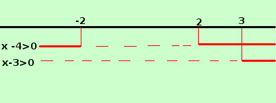
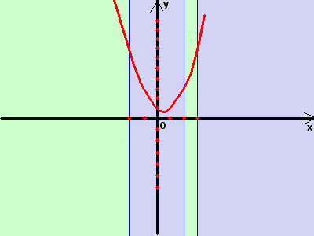
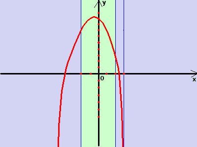
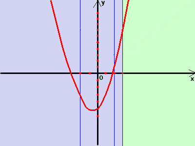
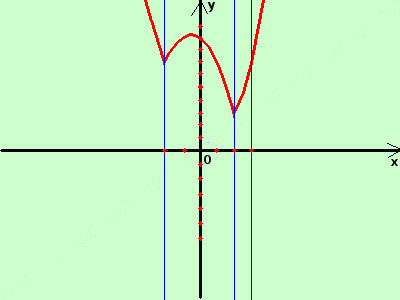

|
sviluppo Data la seguente funzione costruitene approssimativamente il grafico y = |x2 - 4| + |x - 3| + 2 qui abbiamo un esercizio diverso con una somma di moduli Se vuoi approfondire puoi rivedere il metodo in particolare ripassando le equazioni ai moduli Non coinvolgendo il modulo tutta la funzione devo utilizzare la definizione di modulo per dividere la funzione in varie componenti nei vari intervalli possibili; faccio il grafico per vedere ove ho i valori positivi (che prendero' con lo stesso segno) ed i valori negativi (che prendero' con segno opposto): in linea intera i valori positivi, tratteggio i valori negativi  Il dominio viene diviso in 4 partiintervallo -∞; -2 abbiamo la funzione y=x2-4 -x+3+2 = x2-x+1 intervallo -2; +2 abbiamo la funzione y=-x2+4 -x+3+2 = -x2-x+9 intervallo +2; +3 abbiamo la funzione y=x2-4 -x+3+2 = x2-x+1 sempre la prima intervallo +3; +∞ abbiamo la funzione y=x2-4 +x-3+2 = x2+x-5 quindi dobbiamo disegnare la funzione
Per convenzione, scrivendo gli intervalli, poniamo sempre, se possibile, l'uguale a destra di ogni intervallo  Disegniamo la funzione y =x2-x+1 poirestringiamola all'intervallo -∞<x≤ -2 ∪+2<x≤+3 E' una parabola Ha il vertice nel punto (1/2; 3/4) Passa per il punto (0;1) i valori agli estremi dell'intervallo sono per x=-2 ottengo y = 7 per x=2 ottengo y = 3 per x=3 ottengo y = 7 disegno in rosso la funzione, poi lascio in sfondo verde le parti che mi interessano, in azzurro quelle da eliminare  Disegniamo la funzione y =-x2-x+9 poi restringiamola all'intervallo -2<x≤+2E' una parabola Ha il vertice nel punto (-1/2; 37/4) Passa per il punto (0;9) i valori agli estremi dell'intervallo sono per x=-2 ottengo y = 7 per x=2 ottengo y = 3 per x=3 ottengo y = 7 disegno in rosso la funzione, poi lascio in sfondo verde le parti che mi interessano, in azzurro quelle da eliminare  Disegniamo la funzione y =x2+x-5 poi restringiamola all'intervallo +3<x<+∞E' una parabola Ha il vertice nel punto (-1/2; -21/4) Passa per il punto (0;-5) i valori agli estremi dell'intervallo sono per x=-2 ottengo y = -3 per x=2 ottengo y = 1 per x=3 ottengo y = 7 disegno in rosso la funzione, poi lascio in sfondo verde le parti che mi interessano, in azzurro quelle da eliminare quindi, mettendo assieme le parti che mi interessano, il risultato finale e'  |